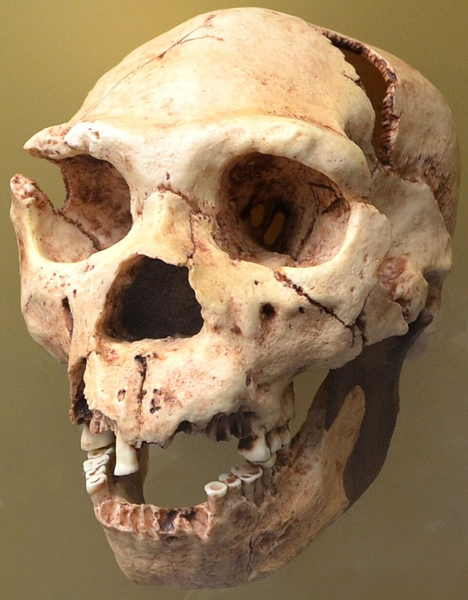

En pocas palabras
| Sima de los Huesos | ADN nuclear de hace unos 430.000 años, el más antiguo de un humano |
| Resultado | Eran antepasados de los neandertales |
| Homo antecessor | Proteínas de hace unos 800.000 años, de la Gran Dolina |
| Historia de la Península | Cazadores, agricultores de Anatolia y pastores de las estepas |


La Sima de los Huesos
En la sierra de Atapuerca (Burgos), declarada Patrimonio de la Humanidad, se encuentra la Sima de los Huesos, un pozo al fondo de una cueva donde se han recuperado restos de al menos 28 individuos de hace unos 430.000 años. Es la mayor acumulación de fósiles humanos de esa época del mundo.
En 2013, el equipo de Matthias Meyer y Svante Pääbo, en colaboración con Juan Luis Arsuaga, consiguió recuperar ADN mitocondrial de un fémur. El resultado sorprendió a todos: se parecía más al de los denisovanos de Siberia que al de los neandertales, aunque los fósiles tenían rasgos neandertales.
En 2016, el mismo equipo logró secuenciar ADN nuclear, el ADN humano más antiguo conocido entonces. Este confirmó que los humanos de la Sima eran antepasados tempranos de los neandertales. La explicación más aceptada de la contradicción es que el ADN mitocondrial de los neandertales fue sustituido más tarde por otro procedente de una población relacionada con los humanos modernos.
Homo antecessor
En el yacimiento de la Gran Dolina, también en Atapuerca, se descubrieron en 1994 restos de una especie humana de hace unos 800.000 años, a la que se llamó Homo antecessor. Son los restos humanos más antiguos de Europa occidental con suficiente información para definir una especie.
El ADN no se conserva tanto tiempo, pero las proteínas del esmalte dental sí. En 2020, un estudio analizó las proteínas de un diente y mostró que Homo antecessor era un linaje hermano muy cercano al antepasado común de neandertales, denisovanos y humanos modernos.
La historia genética de la península ibérica
El análisis de cientos de genomas antiguos ha permitido reconstruir cómo se formó la población de la península:
- Cazadores-recolectores que llegaron hace más de 40.000 años, con varias oleadas tras la última glaciación.
- Agricultores del Neolítico procedentes de Anatolia, que llegaron hace unos 7.500 años por la costa mediterránea, trajeron la agricultura y se mezclaron con los cazadores.
- Pastores de las estepas del este de Europa, cuya ascendencia llegó a la Península hace unos 4.500 años, en la Edad del Bronce. Un estudio de 2019 encontró que, en pocos siglos, sus linajes del cromosoma Y sustituyeron casi por completo a los anteriores, mientras que el ADN de las mujeres cambió mucho menos.
- Aportes posteriores del Mediterráneo oriental y del norte de África, en época romana e islámica, que se ven sobre todo en el sur y el este.
Los vascos, durante tiempo considerados un pueblo genéticamente aislado y muy antiguo, resultan ser una población con la misma mezcla de la Edad del Bronce que el resto, pero con menos aportes posteriores.
Por qué importa
Atapuerca y los estudios de ADN antiguo muestran que la historia humana es una historia de movimientos y mezclas. Ninguna población de hoy es "pura" ni lleva viviendo siempre en el mismo sitio. Ver por qué no existen las razas biológicas.
Fuentes
- Meyer M, Arsuaga JL, de Filippo C, et al. Nuclear DNA sequences from the Middle Pleistocene Sima de los Huesos hominins. Nature. 2016;531(7595):504-507. doi:10.1038/nature17405
- Meyer M, Fu Q, Aximu-Petri A, et al. A mitochondrial genome sequence of a hominin from Sima de los Huesos. Nature. 2014;505(7483):403-406. doi:10.1038/nature12788
- Welker F, Ramos-Madrigal J, Gutenbrunner P, et al. The dental proteome of Homo antecessor. Nature. 2020;580(7802):235-238. doi:10.1038/s41586-020-2153-8
- Olalde I, Mallick S, Patterson N, et al. The genomic history of the Iberian Peninsula over the past 8000 years. Science. 2019;363(6432):1230-1234. doi:10.1126/science.aav1040